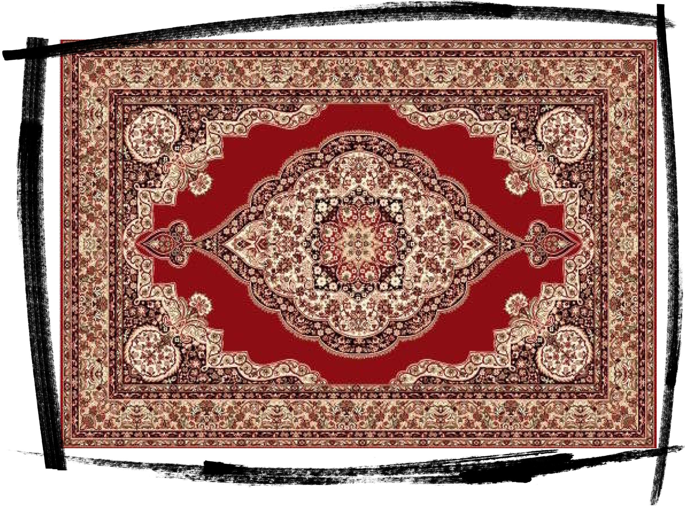
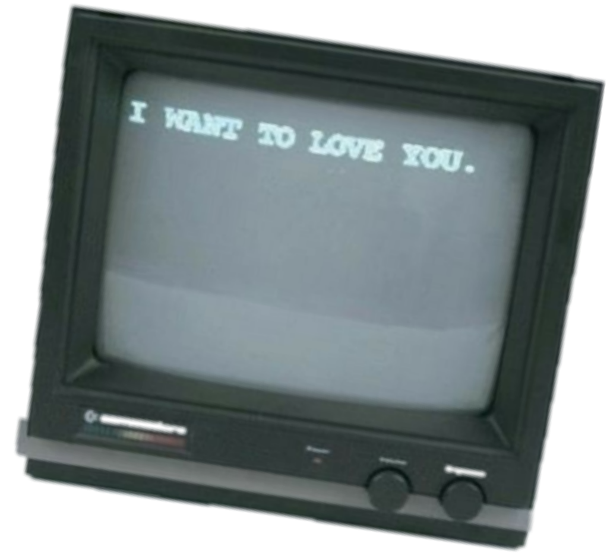

SAMIZDAT

[ самиздат ] продюсерский центр




 аналитика и маркетинговая стратегия
разработка визуальной и контент стратегий
упаковка аккаунта/ребрендинг, дизайн
контент-планирование
конструирование и реализация воронок продаж
Performance-маркетинг (тот, который таргет)
Influence-маркетинг (тот, который с блогерами)
контент-мейкинг, организация продакшена (там, где прям сама съёмка)
аналитика и маркетинговая стратегия
разработка визуальной и контент стратегий
упаковка аккаунта/ребрендинг, дизайн
контент-планирование
конструирование и реализация воронок продаж
Performance-маркетинг (тот, который таргет)
Influence-маркетинг (тот, который с блогерами)
контент-мейкинг, организация продакшена (там, где прям сама съёмка)


.png)
Сначала Стратегия, а потом Арина Гранде, Леди Гага.... иф ю ноУ вот ай мин.
Еще раз. Стратегия (маркетинговая, визуальная, контент) - это то, на основе чего с твоим блогом возможно проводить все другие манипуляции (снимать и генерирть контент, закупать рекламу, выдавать таргет, строить воронки и тд)
Это как поставить диагноз перед тем, как назначить лечение. Это как купить леску перед тем, как собирать браслет bitch из розовых бусинок.
Это как выдохнуть перед тем, как залить шот текилы
.png)

аналитика. Изучаем тебя, как эксперта, замечаем то, что ты не замечаешь. Смотрим на рынок, нишу и ее особенности. Разбираем ЦА вдоль и поперек: определяем сегменты, их паттерны, их инстайты, их пути, надо будет - домой к ним постучимся! Подглядываем за конкурентам, сканируем от макушки до пяток.
выводы и формирование маркетинговой стратегии: сформируем позиционирование, структурно опишем рынок и аудиторию. Исходя из выводов, поймем какие площадки задействовать, что на них делать и в каких количествах. Опишем тезисы о конкурентах, чтобы у тебя была подсказка как делать нужно, а как не нужно (если найдем что стырить - стырим (читай: адаптируем)). Разберемся как продвигаться, у кого закупаться, куда развиваться.
выводы и формирование визуальной и контент стратегий: опишем все находки на коммуникационном поле, расскажем о трендах в нише, на мудбордах и рефбордах (это когда примеры картинок в одном слайде) покажем чего лучше придерживаться в визуале, сформируем TOV (тон оф войс. это про твою подачу в блоге), напишем примерчики для сторителлингов и других текстов
всю нашу добычу, мысли и рекомендации - оформляем в презенташку, созваниваемся, по ней проходимся, обсуждаем, все досконально объясняем, мысли друг друга целуем, расходимся (или идем в реализацию). Презу тебе, естественно, на всю жизнь оставляем, чтобы еще внукам передать

Мы знаем, как много сил требуется на то, чтобы регулярно создавать и вести контент в блоге, а еще и еще и всякие смыслы в него вкладывать - застрелиться можно.
Но есть решение - делегировать! Встала утром, открыла чатик в телеге, посмотрела план по контенту на сегодня, немножко под себя подкрутила и вуаля. Подписчики ставят огоньки, ты счастливая 10 раз пересматриваешь свой рилс, а мы уже готовим новое контент-расписание на неделю.
На основе сформированной стратегии мы берем тебя под креативное крылышко и начинаем создавать постоянную, эффективную коммуникацию.
мы присылаем тебе табличку, в которой расписана контентная неделя для всех твоих площадок (инст, TG, TT и тд), там ты видишь тезисы для текстов, темы для съёмок
каждое утро мы присылаем тебе расшифровку на день из этой таблицы, в которой подробнее расписываем сценарии, что и куда сегодня выкладываем. Формат расшифровки подстроим индивидуально (кому-то нужны только тезисы, а для кого-то важен целиком написанный текст)
в дополнение к расшифровке - мы присылаем тебе волшебный пинок и подглядываем за выкладкой
мы вместе с тобой обсуждаем и создаем креативы для контента (читай: сценарии/идеи для рилс/ идеи для фото), весь месяц наши мозги в твоем распоряжении


Как говорили наши деды: я некрасивое не ем.
Ладно, допустим, они так не говорили. Но факт остается фактом - люди любят глазами и делают вывод о тебе и твоем блоге в первые секунды взаимодействия.
Представь, знакомишься ты на нетворкинге, даешь свой инстик, а новых подписчиков нуль. Очень велика вероятность, что их просто не зацепил твой профиль (ну если, конечно, дело не в том, что ты не пропала в ЦА или оффер подобрала на троечку).
В общем, если первично твой профиль потенциальному фоллеверсу не приглянулся, то убедить его стать твоим подписчиком/клиентом становится в разы сложнее. Мы усложнять не хотим, поэтому предлагаем упаковать тебя круче, чем багаж в Шереметьево
на основе коммуникационной стратегии: разрабатываем хайлайтсы со сценариями для заполнения, описываем шапку профиля, разрабатываем рубрики, пишем 6 постов. Все эти действия сопоставляем с TOV и персонализируем, корректируем под твой блог
на основе визуальной стратегии: создаем дизайн-шаблоны для сторис и других единиц контента, собираем рекомендации для съёмок, чтобы с ними идти к фотографам и видеографам, подготавливаем 6 постов в ленту (на основе уже готовых фоток или видосов - отбираем то, что подходит, редактируем и отдаем)
на выходе отдаем тебе протюненную страницу, на которую приятно и интересно смотреть

Инфлюенс - это когда закупка у блогеров.
Не обязательно у тех, что миллионники, но и у небольших, недорогих, с понятной аудиторией, контролируемой географией, нужной тематикой блога и все такое. Вообще там целая эпопея: блоги подбери, релевантных отбери, каждому напиши, договорись, цену сбавь, ТЗ напиши, выкладку проконтроль, статистику собери, отчет напиши... короче страх капитальный, но мы и такое умеем.
Вообще в условия проблемок с таргетом - це пестня!

собственно все, что описали выше, только опираясь на данные, которые мы собрали на этапе стратегии
подберем релевантных блогеров и соберем анализ их профилей (чтобы накруток не было, чтобы конверсии были высокие, статистика хорошая и другие непонятные словечки типа ER, LQI и тд)
будем вести коммуникацию с блогерами, сформируем ТЗ, разберемся с бумажками, проконтролируем выход рекламы
соберем статистику и сформируем отчет


Это тот, что таргет. Вообще хорошего таргетолога днём с огнём не сыщешь, но мы искали ночью и с фонариком.
Тут конечно вообще декаданс: считай мы и креативы подготовим, и спеца забрифуем, и настройку всю сами сделаем, тебе только вовремя отключить звук на телефоне, чтобы уведомления о новых подписчиках не начали раздражать.
А, ну и хорошо упаковаться, чтобы фоловерсы влюбились в тебя с первого взгляда и сразу побежали ставить огонечки

на основе прописанный стратегии мы разрабатываем перфоманс-план
подключаем все кабинеты и сервисы аналитики, не заставляем тебя создавать новые странички, работаем с тем, что есть
выбираем нужные площадки (да, если узнаем, что твои люди сидят в ВК - придется вспоминать пароль от контакта)
пишем рекламные креативы (картиночки, тексты, видео), оффер готовим
настраиваем все по технической части
собираем аналитику, готовим отчет

Если ты инфоцыган, то у нас для тебя план!
Рассказываем: чтобы твой продукт весело продавался и приносил тебе денежки - необходимо четко понимать по какому пути идет клиент, в какой момент он начинает с тобой взаимодействовать, когда он начинает тебя любить, а когда готов купить.
Контроль и конструирование этого процесса и называется воронкой продаж. Сценариев воронок может быть куча, нам же важно подобрать для тебя ту самую, с которой потом ты напишешь у себя в шапке «сделал 100000000000000000 деняк и тебя научу!»
на основе стратегии мы создадим воронку продаж и пошагово ее опишем (так, чтобы прям в любой момент открыла и вспомнила, что это такое)
соберем все пазлики, которые нужны для реализации (отправим снимать контент, найдем и забрифуем специалистов если нужно и тд)
реализуем техническую часть: найдем площадку для продаж под твои возможности, разместим, все кнопки потыкаем, всё, что непонятно - объясним

.png)

Самая интересная часть всей блогерской и инфоцыганской жизни - съёмки.
Мы тоже это дело обожаем и сильно хорошо умеем, потому что пол жизни на съёмочных площадках провели! Итак, вот сидишь ты и думаешь: «надо бы курс записать» или «а наснимать бы рилсов сразу на месяц вперед!» или «фотки приличные закончились, контент-съёмку бы замутить»... а тут раз и мы!
И препродакшен подготовим, и всех специалистов под бюджет найдем, на площадку приедем, поддержим, проконтролируем, и постпродакшн организуем
исходя из визуальной и коммуникационной стратегии сформируем рефборды и мудборды под конкретную съёмку, поможем с образами, подкорректируем или создадим сценарий, найдем специалистов, подготовим им ТЗ, забрифуем
найдем локацию, подготовим тайминг, разберемся с оборудованием и решим все возможные проблемки по ходу
в день съёмки приедем на локацию, поддержим, подскажем, посмотрим: нет ли лишних подбородков, не выбилась ли прядка из хвоста, и 58 раз подбежим с фоткой экрана камеры, чтобы ты увидела себя в кадре
после - проконтролируем отдачу материала, согласуем коррекцию и ретуш, если это фото (нам в личку сможешь не стесняясь писать, что тебе не понравилось, а мы там сами сгладим углы в коммуникации со специалистом)
если видео - заберем на постпродакшн (монтаж, звук, цветокоррекция), проконтролируем и отдадим готовенькое
Раньше каждый из основателей нашей команды весело бороздил просторы московской креативной индустрии. Стратег, арт-директор, креативный продюсер, разработчик...
Мы работали с топовыми рекламными агентствами и продакшенами, клепали рекламы мировым брендам, делали кампейны для отечественных гигантов, топтали одни площадки с селебами и блогерами, и набирались опыта у громадных коллег…
И вот мы выросли, обросли мышцами, стальными яичками и, наконец, решились запустить свой собственный продукт, в котором применили.
Мы запустили продукт в котором применяем наши знания для создания новых, гениальных проектов в инфлюенс и инфо-бизнесах


Вот представь бутер (да, да, бутерброд):
нижняя булочка - наша база маркетинга (мы прям по образованию маркетологи). Колбаска, сырок, помидорка, салат - это ты! Всё самое вкусненькое, без чего булка была бы просто булкой. А верхний хлебушек - это наша креативная экспертиза, она красиво накрывает начинку. Теперь несем поджариваться, чтобы наш сендвич обзавелся корочкой из налаженных процессов, качественного сервиса и нетривиального подхода.
И вуаля! Авторский рецепт сендвича «samizdat», ресторан «продюсерский центр», Грузия, 2023
ну всё, работаем!
Пиши в ТГ, ждём.
@samizdat_pc / +995 591 024 075
+7 (964) 269-31-71 (в What's up тож можешь чирикнуть)